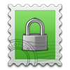
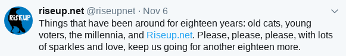

Dostawcy usługi e-mail - którego wybrać?
- Wstęp -- Usługodawcy -
- Google, Yandex, Outlook, Yahoo -
- Hushmail -
- VFEmail -
- FastMail -
- Scryptmail -
- SAFe-mail (safe-mail.net) -
- ProtonMail -
- Runbox -
- Mailfence -
- Safe-Mail (safe-mail.nl) -
- Neomailbox -
- Paranoid.email -
- CTemplar -
- KolabNow -
- Teknik -
- Tutanota -
- Cock.li -
- Dismail -
- StartMail -
- CounterMail -
- Posteo -
- RiseUp -
- Disroot -
- Autistici -
- E-mail tymczasowy -
- Podsumowanie -
- O szyfrowaniu -
Wstęp
E-mail mimo wielu wad jest na razie złem koniecznym. Co powinniśmy wziąć pod uwagę wybierając dostawcę tej usługi? Najważniejszą rzeczą jest jego polityka prywatności - czyli, jakie dane zbierają i przechowują, na jak długo - a także komu je przekażą w danych okolicznościach. Oczywiście nie powinniśmy bezwzględnie im ufać - należy za to zwrócić uwagę na braki lub trudny dostęp do kluczowych informacji, wszelkiego rodzaju korpomowę z trudem rozumianą przez śmiertelników a także sprzeczne ze sobą twierdzenia. Zawsze sprawdzaj czy usługodawca nie padł w przeszłości ofiarą włamania! Inne kryteria które warto wziąć pod uwagę: czy dostawca wspiera klienty mailowe (mail w przeglądarce to okropieństwo które pozbawia cię kontroli); możliwość logowania przez Tor/VPN; czy usługa jest płatna czy darmowa (choć lepiej jest zapłacić za dobrą usługę niż mieć mierną za darmo; bez obaw - najlepsze w tym artykule są darmowe). Kolejną rzeczą na którą możesz chcieć zwrócić uwagę jest: prawdopodobieństwo zamknięcia usługi - jeśli istnieje ona dziesięć lat, można założyć, że będzie istnieć drugie tyle. Jeden gość świadczący usługi jest nieprzewidywalny jak bomba zegarowa. Szyfrowanie? Wbudowane szyfrowanie w moim mniemaniu jest jedynie iluzją - jest wiele sposobów na jego implementację, ale żaden nie jest tak solidny jak PGP z własnymi kluczami. No i wymagają one przeglądarki, podczas gdy PGP można używać z klientami mailowymi (niektóre z nich, na przykład Claws Mail posiadają wbudowaną obsługę). Dobra, starczy wstępu, przejdźmy do meritum.
Usługodawcy
 Google, Yahoo, Outlook, Yandex
Google, Yahoo, Outlook, Yandex
Zaprojektowane by zebrać jak najwięcej informacji, nie ma sensu ich używać. Nie ma tu za dużo do powiedzenia, przejdźmy do tych które są (lub udają, że są) bardziej prywatne.
 Hushmail
Hushmail
Każdy ma prawo do prywatności. Przejmij kontrolę nad swymi danymi, doświadcz skrzynki bez reklam.
Brzmi świetnie! Sprawdzę tylko czy dowód rzeczowy potwierdza wasze zapewnienia...
Gdy odwiedzasz naszą stronę internetową możemy zbierać dane, takie jak typ przeglądarki, system operacyjny a także adres IP twojego komputera. Informacje te użyte są w celu ułatwienia użycia naszej strony, gromadzenia informacji marketingowych, zapobiegania nadużyciom naszych usług.
Nie, dzięki. Ale zaraz, to tylko strona - mógłbym to znieść gdyby sama usługa była prywatna. Ale czy tak jest?
Staramy się ograniczać gromadzenie danych personalnch tam, gdzie to możliwe.Wow, dzięki! Zobaczmy więc, jak bardzo staracie się "ograniczać":
Podczas tworzenia konta twój adres IP zostanie zapisany. Możemy żądać podania innych informacji, takich jak numer telefonu. Te informacje używane są do analizy rynku, gromadzenia danych demograficznych [...]
Pytanie o mój numer telefonu to jakiś żart, prawda? A oni znowu o marketingu i analizie rynku...
Dane zbierane przez nas mogą zawierać [...] nazwy użytkownika, adresy nadawców i odbiorców wiadomości, nazwy załączników, tematy maili, linki w treści nieszyfrowanych wiadomości a także każda informacja która według nas niezbędna jest do pracy systemu oraz zapobiegania nadużyć.
Więc zaglądacie nawet do linków w moich wiadomościach! A mówienie o każdej innej informacji
to tylko przyznanie się, że mogliby gromadzić wszystko co można sobie tylko wyobrazić. Ale po co kryć się za zapobieganiem nadużyć
? Po prostu przyznajcie, że jesteście tu by gromadzić informacje.
Dzielimy się informacjami handlowymi, reklamowymi, dotyczącymi obsługi klienta z osobami trzecimi które wspierają działania biznesowe, co oznacza, że dane takie jak twoje imię, adres e-mail, numer telefonu oraz nazwa firmy, a także historia komunikacji dotycząca sprzedaży lub obsługi klienta mogą być przez nich przechowywane.
A teraz moje dane i numer telefonu wysyłane są do chuj wie kogo. Czy może być jeszcze gorzej?
Przechowywany przez nas zapis twoich działań jest bezpowrotnie usuwany po około 18 miesiącach. Dane zgromadzone w celach statystycznych mogą być przechowywane bezterminowo.
...czyli może być gorzej. A to jeszcze nie wszystko (nie chce mi się pisać o tym książki!) - sprawdź ich politykę prywatności (archiwum) jeśli wciąż chcesz się torturować.
Zapomniałem wspomnieć, że Hushmail chce pieniędzy za tą zniewagę! Nie wspierają nawet klientów pocztowych. Biorąc to wszystko pod uwagę, bez wątpienia jest to najgorszy wybór na tej liście. Mają nawet czelność umieszczać takie brednie na swej stronie:
Hushmail dostarcza bezpieczne, prywatne i szyfrowane usługi e-mail od 1999. Dlatego klienci ufają naszemu doświadczeniu w tej dziedzinie.
Jasne - jesteście bardzo warci zaufania!
 VFEmail
VFEmail
Wymaga rozwiązania ReCAPTCHA oraz podania prawdziwych danych podczas rejestracji. Wiele podejrzanych rzeczy w regulaminie; opisanie wszystkich zajęłoby rok, więc omówię tylko te najważniejsze:
[...] VFEmail.net może zlikwidować i/lub zmieniać i/lub modyfikować twoje konto [...]
Zaraz, modyfikować moje konto?? Co kurwa? To może znaczyć dokładnie wszystko, podmienianie moich wiadomości, usuwanie kontaktów albo zmianę hasła. Chyba was pojebało.
[...] VFEmail.net lub osoba wyznaczona może ujawnić osobom trzecim informacji o użytkowniku lub jego użytkowaniu usługi [...]
Świetnie! Rzuć swoją prywatność na pożarcie przez reklamodawców.
Użytkownik wyraża zgodę na prezentację treści zawierających lecz nie ograniczających się do tekstu, oprogramowania, muzyki, dźwięku, fotografii, grafik, filmów i innych materiałów reklamowych od sponsorów przez usługę lub reklamodawców chronionych prawami autorskimi, znakami towarowymi, prawami patentowymi lub innymi prawami własnościowymi.
Więc będą Ci wysyłać reklamy, a Ty nie możesz ich nawet nikomu pokazać, ha!
Darmowe konto nie dostaje nawet szyfrowania SSL, więc twoje wiadomości wysyłane są jako zwykły tekst, który może przeczytać twój dostawca internetu. Możesz zapłacić żeby otrzymać dostęp do jakichś bezużytecznych funkcji, ale okropny regulamin wciąż Cię dotyczy. A tak dla rozluźnienia...
Jeśli otrzymasz wiadomość między ostatnim żądaniem a kopią o północy, będzie ona zapisana przez tydzień - chyba, że kopia odbędzie się o północy w sobotę, wtedy rok.
Że co? Oni chyba sobie lecą w chuja. Twoje wiadomości są przechowywane na kopii zapasowej przez tydzień... chyba, że to sobota. Co za przypadek.
A co do całej reszty, nie wiesz co jest przechowywane i na ile. Jeśli wciąż nie wiesz co masz myśleć - trzymaj się od tego ścierwa z daleka! Serio, to wygląda jakby paru znudzonych żartownisiów wzięło wszystko co godzi w użytkownika, rozreklamowało się jakimś gównem typu Metadata Mitigator™
- za które oczywiście trzeba zapłacić - a potem polecieli na Malediwy dalej trzepiąc na swoich gównianych usługach gruby hajs. To może być gorsze od Gmaila, który chociaż nie kryje się ze swoim brakiem prywatności i dostarcza całą funkcjonalność za darmo.
FastMail
Kolejny płatny dostawca który gdzieś ma twoją prywatność. Za ich polityką prywatności (archiwum):
Jeśli rejestrujesz się by używać, bądź używasz jednej z naszych stron internetowych lub usług [...] dane osobowe które mogą być gromadzone obejmują imię, adres rozliczeniowy, numer telefonu komórkowego, nazwę organizacji, nazwę domeny, adres IP, odcisk przeglądarki oraz dane rozliczeniowe
Imię, numer telefonu, adres. Już na starcie, FastMail szybko zmierza w stronę braku prywatności.
Przetwarzamy wiadomości wysyłane oraz otrzymywane aby zapobiegać spamowi oraz oszustwom
"Prywatny" FastMail skanuje twoje wiadomości.
Gromadzimy także dane z twojej książki adresów, kalendarza, notatek oraz plików na naszych serwerach.
Czy jest coś czego nie gromadzicie?
Gromadzimy także zawartość wiadomości które tworzysz, wysyłasz, lub wysyłasz innym.
Czyli nie - nawet inni ludzie nie są bezpieczni od wścibskiego FastMaila.
Za każdym razem gdy korzystasz z naszych usług, zapisujemy twój adres IP, identyfikator klienta (informacje o przeglądarce lub kliencie poczty) i nazwę użytkownika. Jeśli wysyłasz wiadomość, zapisujemy adres którego używasz do wysłania wiadomości oraz adres na który wysyłasz wiadomość. Jeśli podejmujesz działania w swojej skrzynce pocztowej, zapisujemy także podjęte działania.
Czyli każdy twój ruch jest śledzony. Teraz czas na trochę humorku - popatrzcie jak się tłumaczą:
Jest to niezbędne aby udowodnić dostarczenie wiadomości oraz analizować nadużycia.
Jasne. Ciekawe dlaczego prawie żaden inny dostawca na tej liście tego nie robi? Patrz na ten wpis (z sejchu Jak używamy danych osobowych które od ciebie gromadzimy?
):
prowadzimy analitykę i statystykę aby mieć wgląd w sposób w jaki używane są nasze usługi;
Aha, czyli od samego początku chodziło o analitykę, zamiast "zapobieganie oszustwom" albo inną brednię. A teraz czas na coś co jeszcze bardziej przekreśla FastMail (z sekcji Dzielenie się danymi osobywmi z innymi
):
Możemy dzielić się twoimi danymi osobowymi [...] z osobami trzecimi które pomagają zarządzać naszym biznesem i dostarczać usługi [...] Niektórzy z naszych partnerów używają aplikacji lub systemów informatycznych opartych na "chmurze", co oznacza, że twoje dane osobowe będą dostępne na ich serwerach
A teraz wszystkie dane o których mówiłem będą przechowywane na serwerach osób trzecich.
Możemy używać twojego imienia/nazwiska oraz adresu e-mail aby dostarczać Ci zawartość reklamową oraz dostarczać informacje na temat naszych usług bądź usług pokrewnych którymi naszym zdaniem możesz być zainteresowany
Jeszcze będą zalewać twoją skrzynkę pocztową reklamami. Ale skąd FastMail wie czym będziesz zainteresowany
? Oczywiście dlatego, że zebrali o tobie ogromne ilości danych - między innymi zawartość twoich maili! Później twierdzą, że nie dostosowują reklam do użytkownika, ale to przeczy temu co jest powyżej - a my zawsze powinniśmy zakładać najczarniejszy scenariusz. FastMail używa także usług Matomo do śledzenia użytkownika, zostały one opisane w części o ProtonMailu. No dobra, to dość sporo informacji gromadzonych - ale jak długo są one przechowywane na serwerze?
Informacje związane z twoim adresem IP przechowywane są na około 90 dni.
Gdy zażądasz usunięcia swego konta z naszego systemu, natychmiastowo blokujemy konto i archiwizujemy informacje, następnie usuwamy je z naszych serwerów w ciągu 7 dni.
W sumie to nieźle, niektórym zajmuje to rok albo i więcej... Ale czekaj:
W niektórych przypadkach jednak, możemy przechowywać twoje dane personalne na dłuższy okres czasu
Ha! Czyli te 7 dni było tylko na pokaz. Pozwolę sobie przytoczyć inną sekcję (archiwum):
Po zlikwidowaniu konta, dane oraz kopie zapasowe są usuwane w okresie pomiędzy 37 dni a rokiem od zamknięcia konta
Czyli jednak zajmuje wam to rok. I zrobiliście mnie w chuja z tymi 7 dniami. To wygląda jak jakiś trolling. Czy o FastMail można powiedzieć cokolwiek dobrego? Chyba tylko to:
Bezpieczne szyfrowanie przez przeglądarkę jest niemożliwe. Są dwie metody, obie wadliwe:
To prawda, też o tym mówiłem. Przynajmniej nie udają, że mają magiczne szyfrowanie z kosmosu. No i może to:
Nie udostępnimy żadnych danych bez uzasadnienia od australijskiego wymiaru sprawiedliwości. Jako spółka australijska nie odpowiadamy przed sądami Stanów Zjednoczonych.
Ale pamiętaj, że niektóre z twoich danych będą przechowywane na serwerach osób trzecich w innych krajach, które mogą mieć całkiem inne spojrzenie na sprawę...Tak czy inaczej, nie widzę powodu żeby używać tej usługi. Ilość gromadzonych danych jest ogromna (a o wszystkim nawet nie powiedziałem), dzielą się nimi z osobami trzecimi żeby rozsyłać reklamy - a ty jeszcze musisz za to płacić.
 Scryptmail
Scryptmail
Darmowy okres próbny na 7 dni, potem musisz zapłacić. Nie wspierają klientów poczty. Twierdzą, że szyfrują metadane i nadawców zamiast jedynie wiadomości. Blog i forum są martwe; FAQ jest przestarzałe - piszą w nim, że Scryptmail ma rok, a ma 4.
A co o prywatności? Strona używa Matomo opisanego w sekcji ProtonMaila. A sama poczta? Według ich polityki prywatności (archiwum), gdy dwóch użytkowników Scryptmaila się komunikuje, jedynie czas wysłania wiadomości
jest przechowywany. Jeśli natomiast ktoś wysyła do ciebie wiadomość z konta od innego dostawy e-mail, dane rozszerzają się do:
adres e-mail nadawcy i odbiorcy, adres IP z którego wysłana została wiadomość, temat wiadomości, jej treść i załączniki oraz czas nadania i odbioru.
Wśród innych gromadzonych informacji: Czas ostatniego logowania, adres IP, odcisk przeglądarki, żądania API.
Twierdzą, że nie mają możliwości przypisania adresu IP do danego użytkownika.
Co sprzeczne jest z ich wcześniejszym twierdzeniem, skoro wiedzą kiedy dane konto zalogowało się, a także z jakiego adresu IP. Możliwe, że usuwają informacje o koncie do którego dane należą, ale twierdzenie, że "nie mają możliwości" to zwykłe kłamstwo.
Powinieneś zakładać, że twoje dane będą przechowywane w nieskończoność. Z sekcji Przechowywanie Danych: Dane o kontach aktywnych przechowywane są bezterminowo.
A co o kontach usuniętych?
Twoje dane osobowe zostaną usunięte nie później niż do końca roku następującego po roku zerwania umowy chyba, że z pewnych powodów nastąpią odstępstwa od umowy. [...] Ponadto, usunięcie danych rozliczeniowych może nie odbyć się jeśli wymagają tego regulacje prawne.
Podsumowując: płatna, nie obsługuje klientów poczty, z pokręconą i przeczącą samej sobie polityką prywatności, spora ilość danych przechowywana i nigdy nie usuwana. Unikać!
 SAFe-mail (safe-mail.net)
SAFe-mail (safe-mail.net)
Usługa prosto z Izraela, uruchomiona w 1999. Zanim przejdziemy do rzeczy istotnych, zobaczmy jak się prezentują. A o co chodzi? Chodzi o to, że strona wygląda jakby była stworzona przez szympansa - przez to uzyskanie jakiejkolwiek informacji staje się wyzwaniem. Większość była pisana chyba za czasów okupacji, a niektóre sekcje są ze sobą sprzeczne. Mieli zajebane 20 lat żeby stworzyć porządną stronę ale zamiast tego mamy tą abominację...ale spróbujmy coś z niej wykrzesać:
SAFe-mail udaje, że obchodzi go prywatność, ale nie ma nawet polityki prywatności. Jedyną rzeczą jest ten fragment z 2008 który mówi:
Safe-mail.net nie używa ciasteczek i nie gromadzi danych o użytkownikach. Safe-mail.net nie przekazuje, sprzedaje bądź w inny sposób wymienia się danymi które może mieć o użytkownikach z żadną osobą trzecią.
Więc rzekomo nie gromadzą ŻADNYCH danych o użytkownikach. Więc po co zaznaczają, że nie sprzedają danych? Ale zaraz, jest jeszcze to: (z regulaminu) (archiwum)
SAFe-mail Ltd. nie udostępni żadnych informacji o użytkowniku bądź jego użyciu SAFe-mail, chyba że...
No dobra, czyli jednak macie dane o użytkownikach...
Zgadzasz się na dostęp SAFe-mail do twojego konta, wliczając jego zawartość, z tych przyczyn lub dla usługi bądź przyczyn technicznych. [sic!]
Czyli teraz przyznajecie, że macie dostęp nawet do zawartości mojego konta? Czy to nie jest przyznanie się, że czytacie nasze wiadomości?
Proszę wziąć pod uwagę, że twój adres IP jest przesyłany z każdą wiadomością wysłaną z twojego konta.
Co za odkrycie. Interesuje nas jednak, czy ten adres IP, albo jakiekolwiek inne dane są przechowywane przez SAFe-mail i na jak długo - a tej informacji nie udzielają. Czy to nie brzmi podejrzanie? SAFe-mail poświęca dużo uwagi kreowaniu się na prywatną usługę, lecz skrywają wiele tajemnic o tym, jakie dane gromadzą; właściwie to trzeba czytać między wersami żeby zdać sobie sprawę, że gromadzą jakiekolwiek dane. Według mnie to wygląda jak honeypot.
Darmowe konto nie wspiera wysyłania wiadomości przez klienty pocztowe, jedynie odbieranie. Inne funkcje rzekomo mające poprawić prywatność jak SafeBox też są płatne. Oczywiście, kiedy już zapłacisz za usługę, nie jesteś anonimowy - oni nie przyjmują bitcoinów. Formularz do rejestracji pyta o twoje imię i nazwisko oraz numer telefonu; każde konto musi być ręcznie zatwierdzone. Próbowałem zarejestrować się przez Tor zostawiając miejsce na numer telefonu puste - ale wpisując autentycznie brzmiące imię i nazwisko - nie otrzymałem potwierdzenia przez dwa dni. Jeden czytelnik jednak otrzymał dostęp do konta w ciągu jednego dnia. Tak czy inaczej, to wygląda jak honeypot i nie warto go używać.
 ProtonMail
ProtonMail
Najpopularniejszy "prywatny" dostawca e-mail, często także pierwszy wybór osoby odchodzącej od trzech gigantów. Ale czy to oznacza wysoką jakość? Zacznijmy od rejestracji - jeśli rejestrujesz się przez Tor albo VPN, ProtonMail wymaga potwierdzenia SMS, którego obiecują nie przechowywać, ale tego nie da się udowodnić. Ich szyfrowanie działa poprzez generowanie kluczy kiedy się rejestrujesz - nie możesz użyć swoich własnych. Skoro całe szyfrowanie dokonywane jest przez JavaScript w przeglądarce, nic nie zabroni im użycia JavaScripta z backdoorem; szyfrowane wiadomości wysyłane są jedynie do innych użytkowników ProtonMaila, chyba, że używasz płatnego konta. Według ekspertów, szyfrowanie ProtonMaila jest poważnie wybrakowane. Na końcu artykułu znajdują się linki do artykułu opisującego problemy szyfrowania w przeglądarce. Klienty pocztowe nie są obsługiwane po raz kolejny, chyba, że przez płatną funkcję "Protonmail Bridge" - która wciąż nie zezwala na użycie własnych kluczy.
Ale zostawmy te głupoty i sprawdźmy, jakie dane przechowuje ProtonMail i na jaki okres czasu. Cytując ich politykę prywatności (archiwum):
Stosujemy Matomo, otwartoźródłowe narzędzie analityczne. Dane te są anonimizowane gdy to możliwe i przechowywane lokalnie (a nie w chmurze).
Więc kiedy odwiedzasz ich stronę, Matomo cię szpieguje. Ale jakie dane w ogóle zbiera to narzędzie? Ze strony Matomo (archiwum):
Wszystkie podstawowe dane statystyczne: najpopularniejsze słowa kluczowe i wyszukiwarki, strony internetowe, media społecznościowe, najpopularniejsze linki, tytuły stron, kraj użytkownika, usługodawcy, system operacyjny, udział przeglądarek, rozdzielczość ekranu, komputer czy telefon, zaangażowanie (czas spędzony na stronie, ilość wyświetlonych stron podczas wizyty, powtórne wizyty), najpopularniejsze kampanie, niestandardowe zmienne, najpopularniejsze strony wejścia/wyjścia, pobrane pliki i wiele więcej, podzielone na cztery główne kategorie – Odwiedzający, Akcje, Odsyłający, Cele\E-biznes (ponad 30 raportów)
Oto strona, a co z pocztą?
Mamy dostęp do poniższych metadanych: adres e-mail nadawcy i odbiorcy, adres IP z którego wysłana została wiadomość, temat wiadomości, czas wysłania i odbioru wiadomości. [...] Przechowujemy również poniższe dane na temat aktywności konta: ilość wysłanych wiadomości, ilość użytej przestrzeni dyskowej, całkowita liczba wiadomości, czas ostatniego logowania.
Świetnie, więcej metadanych niż Tutanota (jeśli ufasz, że Tutanota zbiera tylko tyle metadanych ile twierdzi). A spójrz tylko na to:
Kiedy konto ProtonMail jest zamykane, dane są natychmiastowo usuwane z serwerów produkcyjnych. Dane o kontach aktywnych są przechowywane bezterminowo. Usunięte wiadomości także są usuwane z serwerów produkcyjnych. Usunięte dane mogą być przechowywane na kopiach zapasowych do 14 dni.
Przeczytajcie to ponownie! Bezterminowe przechowywanie danych przez "szanującego prywatność" ProtonMaila! A 14 dni to wystarczająco by "oni" się do ciebie dobrali. Przynajmniej szyfrują dyski...
Jeśli przeczytasz ich sprawozdanie dot. jawności (archiwum), zobaczysz wiele żądań dotyczących danych od rządów z całego świata. ProtonMail udaje, że "wymaga szwajcarskiego nakazu sądowego" do współpracy - ale często podejmują się jej zanim go otrzymają - więc sie spodziewaj się, że staną po twojej stronie. Jest jeden szczególny przykład z maja 2018, gdzie zablokowali konto z powodu powiązań z terroryzmem - a wszyscy wiemy, że to wcale nie jest wygodna wymówka w dzisiejszych czasach, prawda? Mamy więc usługodawcę który nie obsługuje klientów poczty, szpieguje cię na swojej stronie internetowej, przechowuje metadane twoich wiadomości w nieskończoność i natychmiastowo oddaje je gdy jakiś rząd zapuka do ich drzwi i zacznie krzyczeć o "terrorystach". Ich szyfrowanie zdaniem ekspertów jest wybrakowane i nie można go użyć do komunikacji z kontami poza ProtonMailem bez płacenia. Samozwańczy król prywatności jest w rzeczywistości kolosem na glinianych nogach gdy tylko mu się przyjrzeć.
Runbox
Ich strona jest tak przepełniona pozerstwem na temat prywatności, że to cud, że udało im się tam upchnąć cokolwiek innego. Nie będę tego nawet cytował; sprawdźmy od razu czy ich usługi są cokolwiek warte (spoiler: nie są). Za ich polityką prywatności (archiwum):
Zakładając konto wyrażasz zgodę na dostarczenie następujących danych osobowych: Imię, nazwisko, nazwa firmy (gdzie stosowne), numer telefonu (gdzie stosowne), kraj oraz pomocniczy adres e-mail. [...] Aby unieważnić tą zgodę musisz zakończyć korzystanie z Usługi
Przykro mi, ale wymaganie moich danych osobowych to nie szanowanie prywatności. Pierwsze wrażenie nie jest najlepsze, a to dopiero początek.
Informacje o twoim koncie są przechowywane na serwerach mieszczących się w Norwegii tak długo jak twoje konto jest aktywne...
Świetnie, czyli muszę usunąć konto żebyście przestali przechowywać te informacje. A wtedy już znikają, prawda?
...i: do miesiąca po zamknięciu kont próbnych; lub do pięciu lat po zamknięciu kont subskrybentów, ponieważ dokumenty finansowe muszą być przechowywane przez pięć lat zgodnie z Norweskim Prawem Księgowym.
Nie, oczywiście, że nie znikają, to by było uszanowaniem prywatności, a tego nasz "kochający prywatność" Runbox nie zniesie. Dobra, więc po pięciu latach od zamknięcia konta twoje prawdziwe dane znikają z ich baz danych... czyż nie?
Kopia zapasowa danych o kontach jest przechowywana na chronionych serwerach oddzielnych od systemów Runbox na okres do sześciu miesięcy, nawet po usunięciu danych z głównego magazynu.
Nieźle, Runbox bez problemu bije wszystkie rekordy ustanowione przez gigantów takich jak Yahoo i Google; dopiero po pięciu i pół roku twoje dane usunięte zostają z ich serwerów! Ciekawe na jakie jeszcze sposoby Runbox chroni moją prywatność?
Zawartość usług e-mail (dane związanie z pocztą, kontaktami i plikami w usłudze) jest przechowywana na głównych serwerach zlokalizowanych w Norwegii tak długo jak twoje konto jest aktywne a także: do 3 miesięcy po zamknięciu kont próbnych; lub do 6 miesięcy po zamknięciu kont subskrybentów.
Więc wszystkie twoje wiadomości i metadane (nadawca, odbiorca, temat, data/czas) są przechowywane tak długo jak twoje konto istnieje. Mają też kopię zapasową która przechowuje je jeszcze dłużej. Chcecie więcej? No dobra, dobijmy Runbox i idźmy dalej: ich "usługi" są płatne! Dobra, im chyba już starczy. Serio, oni są jak Gmail, tylko musisz za to płacić... ale zaraz, jeszcze jedno: (Przyrzekam, że to ostatni cytat!)
Jeśli kontaktujesz się z nami poprzez e-mail, pocztowo, lub inną formą komunikacji, zachowamy taką korespondencję i zawarte w niej informacje.
Żeby powiedzieć o nich coś dobrego, wspomnę, że akceptują Bitcoiny... no i możesz używać klienta poczty. Mają też 30 dniowy "darmowy" okres próbny. Zasilani są energią ze źródeł odnawialnych (ale faktycznie prywatne Posteo wspomniane później też jest), w sumie to nic więcej dobrego o tej "usłudze" nie można powiedzieć. Ale skoro zbierają tyle danych a zasady ich przechowywania tak bardzo godzą w użytkownika, powinieneś trzymać się od nich z daleka.
Mailfence
Wierzymy, że prywatność w internecie to podstawowe prawo człowieka, czego w dzisiejszych czasach nie można brać za pewnik, zdecydowaliśmy więc, że czas najwyższy zaoferować usługę w pełni skupiającą się na prywatności e-mail.
Słyszałem to wiele razy. Sprawdźmy jak ma się to do waszej polityki prywatności (archiwum)...
Używamy Matomo [...]
Znowu oni? Przeczytaj sekcję ProtonMaila, żeby dowiedzieć się więcej o tym pomiocie szatana.
Gromadzimy adresy IP, identyfikatory wiadomości, adresy e-mail nadawcy i odbiorcy, temat, wersje przeglądarek, kraje oraz daty.
Już mi się to nie podoba, ale zobaczmy jak długo przechowują to na swoich serwerach:
Przechowujemy kopie zapasowe usuniętych wiadomości i dokumentów przez 45 dni.
To niezła prywatność. A to ich wymówka:
Robimy to aby przywracać dane w przypadku omyłkowego usunięcia przez użytkownika. Po 45 dniach wszystkie dane są bezpowrotnie usuwane z naszych systemów.
Jasne - wszystko w imię "dobra użytkownika". Tak czy inaczej, usunięte przez ciebie wiadomości zostaną na serwerach przez 45 dni, niezależnie od powodu. Jeśli nie jest to wystarczająco...
W przypadku zamknięcia konta, wszystkie dane zostaną bezpowrotnie usunięte 30 dni po dacie unieważnienia (np. belgijskie prawo narzuca czas 365 dni po zamknięciu konta).
Więc musisz czekać ponad rok żeby twoje usunięte konto faktycznie zostało usunięte. Fajna ta wasza prywatność, taka niezbyt prywatna.
Mailfence chełpi się ochroną ze strony belgijskich praw dot. ochrony danych osobowych - ale nie dość, że już obaliliśmy tą teorię, znaczenie tych praw jest wątpliwe (archiwum) - zejdź do sekcji Lokalizacja.
Formularz rejestracyjny wymaga JavaScripta i pyta o twoje prawdziwe imię - ale możesz podać fałszywe; nie trzeba czekać na zatwierdzenie. Obsługa klientów poczty jest płatna; chociaż przyjmują Bitcoina. Można używać swoich kluczy PGP, ale wszystko wciąż jest w przeglądarce. Mimo wszystko, brak darmowej obsługi klientów poczty i beznadziejna polityka prywatności - zapomnij.
 Safe-Mail (safe-mail.nl)
Safe-Mail (safe-mail.nl)
Przejdźmy do rzeczy:
Zespół Safe-Mail to grupa nerdów z jasną wizją prywatności. Chcemy dać innym szansę chronić swoją prywatność. Społeczność Safe-Mail chce dać światu do zrozumienia, że prywatność to prawo człowieka i jesteśmy gotowi o nie walczyć.Brzmi świetnie, jednak...
Usługodawca nie sprawdza wiadomości ani innej zawartości przechowywanej na Safe-Mail.nl chyba, że zobowiązuje nas do tego prawo (jedynie gdy otrzymamy nakaz sądowy!!).Czyli możecie czytać wiadomości? Tak czy inaczej, nie będą stawiać się nakazom sądowym. Tyle z
prywatności będącej prawem człowieka.
Nie przechowujemy żadnych informacji o użytkowniku z wyjątkiem informacji które podasz przy rejestracji.Niestety wśród tych informacji znajdują się moje imię i nazwisko oraz miasto (pewnie można podać fałszywe, ale wciąż...).
Safe-Mail.nl nie posiada faktycznej polityki prywatności, więc musimy się posiłkować powyższymi skrawkami i sekcją z ich FAQ - Jakie informacje gromadzimy? - w której twierdzą:
System Safe-Mail zbiera logi których używamy gdy mamy problemy z systemem. Konserwacja jest istotna dla działania systemu Safe-Mail. Rozumiemy obawy związane z brakiem anonimowości, jednak nie możemy twierdzić, że nie gromadzimy żadnych informacji. Sądzimy jednak, że logi starsze niż 7 dni nie mają dla nas żadnej wartości. Zwłaszcza gdy informacje zawarte użyte są do utrzymania systemu. Zdecydowaliśmy, że wszystkie logi z "konkretnymi" informacjami są usuwane z serwera po 7 dniach. Pliki te zajmują jedynie miejsce, które wolimy przeznaczyć na ważniejsze cele. Nie oznacza to jednak, że możesz nadużywać systemu. Mamy zasady i zakładamy, że każdy z was zna te zasady. Walczymy o prywatność, jednak potępiamy nielegalne działania. Prosimy, używaj systemu Safe-Mail z rozwagą.
Zbyt wielu konkretów to tu nie ma - ale "konkretne" dane (cokolwiek to znaczy) rzekomo przechowywane są tylko przez 7 dni.
Darmowe konto nie obsługuje klientów poczty. Akceptują Bitcoina więc czysto teoretycznie możesz mieć anonimowe konto obsługujące klienty poczty. Nawet przy użyciu darmowego konta możesz użyć certyfikatu S/MIME do szyfrowania, jednak w odróżnieniu od PGP, polega ono na zaufaniu do źródła certyfikatu - tak jak SSL.
Może jestem tutaj zbyt surowy - ale jeśli dostępne są DARMOWE usługi z obsługą klientów poczty - które nie pytają o twoje imię i nazwisko - i będą walczyć o twoją prywatność - to właśnie ich powinieneś używać.
 Neomailbox
Usługa płatna $50 rocznie; akceptują Bitcoina. Obsługują klientów poczty. Warunki korzystania z usług zabraniają Ci obgadywać usługę (lol) - nie publikuj fałszywych, złośliwych, oszczerczych lub zniesławiających komentarzy na temat Neomailbox albo obsługi klienta Neomailbox w jakiejkolwiek formie w sieci lub poza nią
. A co o prywatności? Niewiele poza:
Przechowujemy logi ruchu SMTP przez 60 dni do analityki wydajności i zapobiegania nadużyciom. Anonimowe logi użytkowania usuwane są co 10 minut.
W innej części ich strony:
Nie przechowujemy logów ani informacji o użytkowniku poza tymi które absolutnie niezbędne są do poprawiania wydajności oraz monitorowania bezpieczeństwa naszych serwerów. Twój adres IP nie jest zapisywany w naszych logach. Wszystkie logi usuwane są co 7 dni.
Ale zaraz, to jest sprzeczne z poprzednim cytatem. Czyli nie wytłumaczyli się w pełni przejrzyście, jakby nie chcieli żebyś wiedział co dokładnie przechowują. Powinniśmy zakładać najczarniejszy scenariusz, że zawartość wszystkich wiadomości i ich metadane są przechowywane przez 60 dni. No i jeszcze to:
Następujące twierdzenie prawdziwe jest na dzień 1 października 2018 roku: Neomailbox nigdy nie udostępniło żadnych danych o użytkownikach żadnej agencji rządowej ani innemu podmiotowi.
To dobrze. Lecz niestety - nie tylko musisz płacić za przechowywanie twoich danych przez 60 dni, nawet nie możesz powiedzieć o nich złego słowa. Przynajmniej szyfrują dyski i udostępniają jednorazowe adresy, ale jak na płatną usługę Neomailbox jest dość mierny; są darmowe które przewyższają je o klasę.
Paranoid
Twierdzą, że przywiązują wielką wagę do prywatności cytatami takimi jak Naszą misją jest przywrócenie poczucia prywatności ludziom.
oraz Przywróć prywatność codziennej komunikacji e-mail i uczyń ją tak popularną jak to możliwe.
Niestety usługa nie posiada polityki prywatności,więc nie wiesz co tak właściwie przechowują. Twierdzą, że są PRAWDOPODOBNIE JEDYNĄ SKRZYNKĄ E-MAIL SZYFROWANĄ OPENPGP
, ale to nie prawda - nawet ProtonMail i MailFence to mają (chociaż ich implementacja jest gorsza). Wspiera klienty poczty i posiada domenę .onion. Jest jeden problem - Paranoid wymaga zaproszenia, które próbowałem dostać parę dni temu. Najpierw powiedzieli, że mój mail cock.li jest "jednorazowy" i go nie przyjmują. Potem zarejestrowałem się prawdziwym kontem Disroot - choć wiadomość o jednorazowym mailu nie pojawiła się - po około pięciu dniach wciąż nie otrzymałem odpowiedzi. Jeden z moich kontaktów twierdzi, że jego przyjaciel wysłał wniosek parę miesiący temu i wciąż nie otrzymał odpowiedzi. Z tego powodu, mimo swojej prywatności, Paranoid okazuje się bezużyteczny.
CTemplar
Polityka prywatności nie dostarcza za wiele informacji jakie dane gromadzi - poza tym, że ich strona używa pikseli śledzących i na okrętkę przyznaje się do gromadzenia danych na temat użytkowania (Nie udostępniamy danych na temat użytkowania lub informacji śledzących osobom trzecim
). Jesteś także śledzony przez wiadomości które ci wysyłają - Gdy orzymujesz od nas wiadomości, możemy w niej umieścić kawałek kodu który określa czy możesz wyświetlać obrazy HTML a także czy wyświetliłeś/kliknąłeś na linki zawarte w tej wiadomości.
Ale to najwyraźniej da się wyłączyć. Żeby dowiedzieć się czegoś o ich polityce gromadzenia danych, musimy odwiedzić ich stronę O Bezpieczeństwie. CTemplar twierdzi, że nie przechowuje twojego adresu IP ale nie wspomina o metadanych ani czymkolwiek innym. Nie przechowywanie adresu IP jest wielką zaletą, ale tu kończy się nasza wiedza. Może FAQ nam coś wyjaśni? Najwyraźniej tak. Możesz usunąć swoje konto w każdym momencie i nic po nim nie zostaje. Jak na razie jest całkiem nieźle (poza brakiem informacji o metadanych). Oczywiście, jak sprawdzisz szczegóły to wszystko się sypie. Po pierwsze, wymaga rozwiązania ReCAPTCHA przy rejestracji. Nie ma obsługi klientów poczty - rzekomo mają plan ją wprowadzić, ale prawdopodobnie będzie to ich własny wynalazek. Skąd wiem? Z ich Warunków Korzystania z Usługi:
W przypadku gdy oferować będziemy możliwość pobrania oprogramowania do świadczonej usługi a ty pobierzesz to oprogramowanie, oprogramowanie to, włącznie z wszelkimi plikami dołączonymi lub wygenerowanymi przez to oprogramowanie, oraz dane załączone z oprogramowanie (zwanym dalej "Oprogramowaniem), otrzymujesz na nie licencję na użytkowanie zgodne z warunkami umowy od nas bądź osoby trzeciej będącej w posiadaniu licencji. Twoje użytkowanie Oprogramowania może być zarządzane przez dodatkowe warunki dołączone do Oprogramowania. Prosimy o uważne przeczytanie dołączonych warunków umowy w celu określenia pełnego zakresu warunków zarządzających użytkowaniem Oprogramowania. Nie otrzymujesz od nas praw do Oprogramowania. Nie możesz kopiować, powielać, dystrybuować lub w inny sposób wykorzystywać Oprogramowania bądź też odtwarzać kodu źródłowego, modyfikować lub w inny sposób sprowadzać Oprogramowania do formy pierwotnej. Zwróć uwagę, że gdy instalujesz pewne aplikacje dostępne poprzez Usługi, zgadzasz się na pobranie Oprogramowania na twoje urządzenie z dostępem do internetu oraz akceptujesz warunki dotyczące tych aplikacji.
Do jakiego tajemniczego oprogramowania mogą się odnosić poza klientem poczty? Nie mam pojęcia. Więc jeśli kiedyś go stworzą, regulamin zabrania stosowania inżynierii wstecznej. A jeśli oferowaliby inne oprogramowanie, ta okropna polityka prywatności też by się go tyczyła. Regulamin zawiera jeszcze inne podejrzane wpisy:
Na przykład, nie możesz używać Usług w sposób który [...] mógłby dać ci dostęp do Usługi bądź jej zawartości na sposób inny niż przez nas przewidziany, bądź podejmować prób gromadzenia zawartości.
Powyższy cytat sugeruje, że nie możesz nawet użyć rzeczy typu cURL albo wget do interakcji z ich gównianą pocztą. Przyznają także, że mogą usunąć twoje konto bez żadnego powodu:
W dodatku do innych praw, zastrzegamy sobie prawo do modyfikacji bądź odebrania twojej licencji na użycie Usług bądź ich poszczególnych funkcji, o każdej porze i z jakiegokolwiek powodu, bez wcześniejszego zawiadomienia, jeśli uważamy, że złamałeś Warunki Korzystania z Usługi
Pamiętaj - CTemplar ma różne rodzaje płatnych kont. A jako, że powyższy cytat nie mówi jedynie o kontach darmowych, powinniśmy założyć, że mogą w każdym momencie przestać świadczyć usługę za którą zapłaciłeś - czyli ukraść twoje pieniądze. A co do płatności, przechowują te dane przez 14 dni, ale możesz płacić Bitcoinem.
Podsumowując: Wszystko świetnie jeśli obchodzi cię jedynie ukrycie twojego IP (wspierają nawet Tora, mają domenę .onion) - ale im głębiej w las, tym gorzej. Nie obsługują klientów poczty, prawdopodobnie przechowują metadane na bóg wie jak długo (gdyby ich nie zbierali, pewnie by się tym chwalili), regulamin traktuje cię jak niewolnika, mogą zbanować cię za nic. ReCAPTCHA tylko dodaje oliwy do ognia. Poza wsparciem dla Tora i nie przechowywaniem adresów IP, nie widzę powodu żeby tego używać, chyba, że jako tymczasowego konta, ale to wciąż nie jest dobry wybór.
 KolabNow
KolabNow
Płatna, wymaga prawdziwych danych i istniejącego adresu e-mail do aktywacji. Akceptują Bitcoina. Chwalą się poszanowaniem prywatności, razem ze śpiewką o byciu chronionym szwajcarskim prawem. Na przykład tym (archiwum), za które otrzymali żądanie udostępnienia danych do którego się zastosowali:
Uszkodzenie danych 1. Każda osoba, która bez upoważnienia zmienia, usuwa lub sprawia, że dane, które są przechowywane lub przekazywane elektronicznie lub w inny podobny sposób nie nadają się do użytku, podlega karze pozbawienia wolności na okres nie dłuższy niż trzy lata lub karze pieniężnej. Jeżeli sprawca wyrządził poważną szkodę, można nałożyć karę pozbawienia wolności na okres od roku do pięciu lat. Przestępstwo to jest ścigane z urzędu. 2. Każda osoba, która produkuje, importuje, sprzedaje, reklamuje, oferuje lub w inny sposób udostępnia programy, o których wie lub musi założyć, że zostaną wykorzystane do celów opisanych w ust. 1 powyżej, lub dostarcza instrukcje dotyczące produkcji takich programów, podlega karze pozbawienia wolności na okres nieprzekraczający trzech lat lub karze pieniężnej. Jeżeli sprawca działa w celach zarobkowych, może zostać nałożona kara pozbawienia wolności od roku do pięciu lat.
Nie jestem do końca pewny co to znaczy - brzmi jak hakowanie ale może być różnie interpretowane (nawet usuwanie własnych wiadomości może się łapać na usuwanie lub sprawianie, że dane nie nadają się do użytku
). Ich polityka prywatności (archiwum) nie wspomina dokładnie nic o tym jakie dane przechowują poza [...] gwarantujemy, że żadna osoba trzecia nie ma dostępu do twoich danych.
Nie ma żadnych informacji o tym jak długo przechowywane są twoje dane ani o możliwości usunięcia swojego konta. Może znajdziemy coś w Warunkach Użytkowania Usługi (archiwum):
Przechowujemy jedynie minimum logów oraz informacji potrzebne do działania usługi oraz rozwiązywania możliwych problemów.
Minimum logów - dużo mi to mówi. Może ich strona Ramy Prawne (archiwum) zawiera jakieś konkretne informacje?
Są to wnioski o przechowywane dane. Szwajcaria ma prawny wymóg przechowywania danych przez dostawcę przez sześć miesięcy. Przechowywane dane to metadane komunikacyjne, a więc informacje o tym, kto komu przekazał informacje, skąd i kiedy, ale nie o faktycznej treści komunikatu.
Szwajcarskie prawo ochrony prywatności w akcji - ale przynajmniej teraz wiemy coś o gromadzeniu danych przez KolabNow. Poza tym, ich sprawozdanie na temat przejrzystości jest z 2017, więc mogli od tego czasu otrzymać więcej żądań. Tak właściwie, cała strona wygląda na martwą (nawet ich Twitter). Podsumowując, nie widzę powodu, żeby używać ich usług - jest płatna, pytają o twoje prawdziwe dane, przechowują metadane przez 6 miesięcy a w ich polityce prywatności nie ma nic przydatnego. Czemu darmowy RiseUp jest w stanie przechowywać metadane tylko przez jeden dzień - chociaż jest hostowany w "nieszanujących prywatności" Stanach Zjednoczonych - a usługa z super silnymi szwajcarskimi prawami dotyczącymi ochrony prywatności nie? Jedyny plus to obsługa klientów poczty. No i może przyjmowanie Bitcoinów. Ale skoro są lepsze darmowe alternatywy, po co w ogóle się męczyć?
 Teknik
Teknik
Wymaga zaproszenia do rejestracji. Wspiera klienty pocztowe. Ma fajną funkcję (tak mi się wydaje) wyświetlania twojego publicznego klucza PGP innym, jeśli go dostarczysz. Polityka prywatności wiele nie mówi, ale:
Używamy Piwik do śledzenia interakcji użytkownika z witryną. Uruchomiony jest lokalnie na naszym serwerze, więc dane analityczne nie opuszczają serwera.
Piwik ostatnio zmienił swoją nazwę na Matomo, więc po prostu przeczytaj sekcję ProtonMaila by dowiedzieć się więcej.
Daty - Kiedy podejmujesz działanie (np. rejestrujesz konto), data działania zostaje zapisana.
Zgaduję, że to tyczy się wszystkich działań? To okropne. Co dalej?
E-maile - Jakiekolwiek wiadomości które wysyłasz lub odbierasz przy użyciu swego konta Teknik.io są przechowywane na serwerze. Te wiadomości nie są czytane.
Dzięki za nie czytanie mojej poczty... to koniec polityki prywatności Teknik! Żadnej wzmianki czy usuwane wiadomości są faktycznie usuwane, czy robią jakieś kopie zapasowe, jakie dane są współdzielone i na jakich warunkach. Kompletne zero! To bardzo podejrzane, nie sądzisz?. Moim zdaniem nie warto nawet starać się o zaproszenie, kiedy lepsze alternatywy nie potrzebują zaproszeń. UWAGA: Klient ma problemy z rozszerzeniem LinkBot jeśli go używasz, więc wyłącz je dla tej strony.
Tutanota
To był mój pierwszy dostawca po tym jak zainteresowałem się prywatnością, porzuciłem Gmail i przyjaciół. To było zanim wgłębiłem się w temat - teraz już bym go nie polecił. Nie wspiera klientów poczty; myślałem, że używają tego dinozaury, a teraz nie mogę bez niego żyć. Szyfrowanie działa tylko jeśli wcześniej podzieliłeś się PSK z odbiorcą (chyba, że też używają Tutanota, wtedy działa z automatu) - a to oczywiście ma swoje wady (w jaki sposób bezpiecznie podzielić się kluczem) które PGP już rozwiązało. A skoro Tutanota można używać tylko przez przeglądarkę albo ich gówniany klient (który chyba jest taki sam jak w przeglądarce), mogliby z łatwością zmodyfikować kod by przesłać sobie klucz i odszyfrować twoje rzeczy. Tutanota nie umożliwia innych sposóbw szyfrowania, takich jak PGP (i jeszcze obrzuca je gównem na swojej stronie [archiwum], nawe jeśli jest to jedyne prawdziwe szyfrowanie e-mail). W odróżnieniu od ProtonMail, żadna strona trzecia nie skontrolowała szyfrowania Tutanota; tak czy inaczej, na końcu artykułu są linki omawiające problemy z szyfrowaniem w przeglądarce. Jest jeszcze ta niepokojąca polityka dotycząca logów:
W celu konserwacji serwerów e-mail, diagnozy błędów i zapobiegania nadużyciom logi z serwerów mailowych przechowywane są na maksymalnie 7 dni. Logi te zawierają adres e-mail nadawcy i odbiorcy wiadomości oraz czas połączenia, lecz nie zawierają adresów IP.
Nie zawierają adresów IP? Świetnie! Z wyjątkiem jeśli używasz VPN albo Tora - Przechowywane są jedynie adresy IP poddane anonimizacji, które nie są daną personalną.
Świetna wymówka, prawda? Ukryłeś swój adres IP więc nie jest z tobą powiązany... chyba, że Tor albo twój VPN zostaną skompromitowane. Niżej dowiesz się jak bardzo metadane (które Tutanota przechowuje) mogą ujawniać o tobie więcej niż sądzisz.
Rejestracja jest darmowa, ale możesz mieć tyko jedno konto jeśli nie płacisz. Jeśli płacisz, to przygotuj się na to:
Do realizacji płatności kartą kredytową dane twojej karty kredytowej zostaną udostępnione naszemu dostawcy usług płatności Braintree. To oznacza transfer danych osobowych na teren Stanów Zjednoczonych.
Twierdzą, że mają "umowę" z tą firmą, która użyje twoich danych jedynie do przeprowadzenia płatności - ale wartość takich "umów" jest wątpliwa w moim mniemaniu. Twoje dane rozliczeniowe są przechowywane na nieokreślony okres czasu:
Dane związane z zamówieniem oraz adresy związanie z zamówieniem są przechowywane w celu odprowadzenia podatku, z poszanowaniem praw handlowych oraz usuwane pod koniec danego okresu.
Podsumowując: nie wspierają klientów poczty, przechowują zanonimizowane adresy IP oraz metadane, przechowują w nieskończoność (?) dane rozliczeniowe. Mogło być gorzej.
 Cock.li
Cock.li
Brzmi nieźle - obsługuje klienty poczty, nie pyta o dane personalne, zezwala na rejestracje przy użyciu Tora i innych usług prywatności
oraz jest prowadzone przez "jakiegoś gościa", nie korporację
. Potwierdzam - można zarejestrować się przy użyciu Tora - jednak rozszerzenie proxy którego używałem, nie działało. Claws Mail nie był w stanie wykryć automatycznie ustawień, ale można to ustawić ręcznie. Czy to jest właśnie to czego szukamy? Najpierw sprawdźmy jakie dane gromadzi, jak zwykle:
Logi IMAP i SMTP zawierają: Kiedy wiadomość była wysłana, nazwę użytkownika, adres odbiorcy oraz informacje dotyczące połączenia (takie jak adres IP, informacje o przydziale) Kiedy łączysz się z IMAP, z jakiego aresu IP i przy użyciu jakiego (jeśli jakikolwiek) loginu a także czy próba logowania powiodła się
Te informacje, według polityki prywatności Cock.li (archiwum), są przechowywane przez 48 do 72 godzin. Gdy odwiedzasz ich stronę, Cock.li przechowuje te informacje: Logi HTTP zawierają twój adres IP, rodzaj klienta oraz typ żądania
. Twierdzą, że informacje te nie są związane z twoim kontem, lecz bardzo łatwo byłoby je powiązać.
Polityka prywatności Cock.li jest trochę niejasna w tej kwesti, ale wychodzi na to, że możesz usunąć wszystkie swoje dane ręcznie - poza informacjami z rejestracji - a one znikną natychmiastowo. Usunięcie reszty wymaga usunięcia konta, ale nawet wtedy dane będą przechowywane przez 30 dni.
Cock.li trzeba pochwalić za szczerość. Polityka prywatności i regulamin są zwięzłe i rzeczowe. Przyznają, że mają możliwość czytać twoje wiadomości i będą współpracować z organami ścigania; sprawozdania dot. jawności i te dotyczące dotacji są dostępne. Jest jednak jedna rzecz o której możesz chcieć wiedzieć...
https://arstechnica.com/tech-policy/2015/12/cock-li-e-mail-server-seized-by-german-authorities-admin-announces/ (archiwum)."To oznacza, że klucze SSL oraz klucze prywatne oraz całość wiadomości wszystkich 64,500 użytkowników, a także zahashowane hasła, czasy rejestracji i logi z ostatnich 7 dni zostały skonfiskowane i znajdują się w rękach niemieckich władz.
Ta... gorzej już być nie mogło. Ofiary tego wycieku pewnie pluły sobie w brodę, że zainteresowały się całą tą "prywatnością" i porzuciły Gmaila, haha. Zapomnij o normalnej nazwie domeny u tego gościa - wszystkie są o kutasach, gwałtach albo innych rzeczach których wolałbyś nie pokazywać znajomym. Kolejnym problemem jest blokowanie cock.li na różnych stronach. Biorąc to pod uwagę, nie mogę powiedzieć, że to dobry wybór.
 Dismail
Dismail
Jeśli ufasz ich polityce prywatności, to ten jest całkiem niezły. Najpierw musisz wysłać im wiadomość XMPP - ale e-mail do aktywacji wygląda jakby był wysyłany automatycznie, więc to nie jest żaden problem. Rejestracja nie wymaga żadnych danych osobowych. Obsługuje klienty pocztowe. Szyfrują dyski:
Wszystkie wiadomości jakie wysyłasz i otrzymujesz podczas używania naszej usług oraz wszystkie kontakty przechowywane są na zaszyfrowanym systemie plików.
Fajnie. To oznacza, że jeśli ktoś przejąłby serwer, miałby jedynie zaszyfrowane dane. Dismail twierdzi, że nigdy nie otrzymał żądań od żadnego rządu (ale czemu mieliby ci powiedzieć?). Ale powiedzmy, że ktoś jednak przejął serwer i odszyfrował dane - co by otrzymał?
Logi SMTP: nadawca, odbiorca, identyfikator wiadomości oraz rozmiar każdej wiadomości. [...] Logi IMAP: jakie konto logowało się i z jakiego adresu IP.
Hm, trochę sporo metadanych - potem opiszę co można z nich wyciągnąć. Mówią, że usuwają je po 3 dniach, lepiej niż większość. Oczywiście idealnie by było gdyby nie przechowywali metadanych.
Ani zawartość wiadomości ani jej temat nie są przechowywane.
To czyni Dismail o wiele lepszym niż reszta usług których założenie nie wymaga większego wysiłku. Najważniejsza informacja, czyli faktyczna treść wiadomości, pozostaje prywatna.
 StartMail
StartMail
Darmowy 7 dniowy okres próbny z ograniczeniami. Płatna wersja obsługuje klienty poczty, udostępnia tymczasowe adresy e-mail and oraz szyfrowanie OpenPGP. Ale jak zwykle najważniejsza jest polityka prywatności.Prywatność. Nie tylko polityka. To nasza misja.
- twierdzą. No to sprawdźmy. Najpierw strona:
Pośród danych gromadzonych na ich stronie internetowej: adres IP, wersja/typ przeglądarki i systemu operacyjnego, ustawienia języka przeglądarki, kraj, data i czas, źródło wizyty, kliknięte linki oraz odwiedzone (części) stron ich witryny. Hm, ta końcówka brzmi podejrzanie. Jak się tłumaczą? by pomóc nam zrozumieć które części naszej strony efektywnie przekazują informacje
. A źrodło wizyty? by ocenić sukces optymalizacji wyszukiwarek oraz ich zasięg.
A kraj? by widzieć w jakich państwach w danym czasie efektywny jest nasz marketing.
To brzmi jak śledzenie. Twierdzą, że dane te są usuwane i anonimizowane. Nie wiem jak wy, ale ja nie chcę być częścią eksperymentu dotyczącego "marketingu" i "oceny zasięgu". A jak z pocztą?
Kiedy usuwasz wiadomość, jest ona natychmiastowo usuwana z serwerów produkcyjnych, w odróżnieniu od innych dostawców e-mail. Jedynie na kopii zapasowej (która jest oczywiście w pełni szyfrowana) pozostaje ona na okres maksymalnie trzech dni. Informacje o twoim koncie są przechowywane na czas trwania Umowy. Gdy Umowa zostaje zerwana, wszystkie dane o użytkowniku, razem z wszystkimi wiadomościami, są bezpowrotnie kasowane.
I to mi się podoba, a jak z przekazywaniem danych?
Nie odpowiadamy na żądania żadnych władz poza holenderskimi. Jeśli otrzymamy żądanie od jakichkolwiek innych władz, odmówimy współpracy i zasugerujemy wnioskującemu postaranie się o wsparcie władz holenderskich.
StartMail nigdy nie będzie współpracować z dobrowolnymi programami inwigilacji. Z uwagi na prawa dotyczące ochrony danych osobowych w Europie, europejskie władze nie mogą żądać od usługodawców takich jak StartMail implementacji programów szpiegujących. Jeśli kiedykolwiek ulegnie to zmianie, będziemy się przed nimi bronić wszelkimi sposobami.
Nie odpowiemy na żądania stron trzecich o udzielenie informacji o użytkowniku, chyba że otrzymamy holenderski nakaz sądu.
No dobra, więc strony trzecie nie dostaną twoich danych a władze potrzebować będą nakazu sądu holenderskiego; będą się także chronić przed programami szpiegowskimi. Brzmi w sumie nieźle. Jeszcze jedna rzecz. Usługa jest płatna, a oni nie akceptują Bitcoina, więc nie będziesz anonimowy. A oni przechowują dane o płatności przez 7 lat - Przechowujemy faktury przez 7 lat, lub na okres określony w stosownym prawie podatkowym.
A według Wikipedii, faktury zawierają dane personalne takie jak twoje imie i nazwisko. Spory ślad na dobrej na polityce prywatności. To wciąż jeden z lepszych wyborów - ale jeśli bardzo chcesz płatnej usługi, następna jest trochę lepsza.
 CounterMail
CounterMail
Usługa płatna 4 EUR miesięcznie (4 razy więcej niż poniżej!). Akceptują Bitcoina więc możesz pozostać anonimowym. Polityka prywatności twierdzi, że nie przechowują adresów IP, lecz przechowują zawartość wiadomości i metadane, a nie mówią na jak długo. Najwyraźniej w ich serwerowni nie ma dysków twardych, więc jeśli wyłączyliby je w czasie, policja nic by nie uzyskała bez jakiejś magicznej ekstrakcji z pamięci RAM. Oczywiście wciąż mogliby zostać zhackowani lub "zmuszeni" do oddania danych. Wspierają klienty poczty oraz do 10 adresów zastępczych. Brzmi świetnie - podobnie jak poniższy, ale jest parę problemów. Twierdzą, że obsługują automatyczne szyfrowanie PGP, ale możesz jedynie użyć ich kluczya wszyscy wiemy co się za tym kryje. Właściwie to jest możilwość używać własnych kluczy, ale musisz je im wysłać, a to jest bardzo podejrzane. Wtyczka Java jest potrzebna do rejestracji (o cholera, tego to dawno nie było). FAQ ma 6 lat w momencie pisania tego artykułu. Mają darmowy okres próbny na 7 dni jeśli chcesz spróbować, ale najpierw dotrzyj do końca bo najlepsze przed nami.
 Posteo
Posteo
Ich polityka prywatności (archiwum) zaczyna się naprawdę obiecująco:
nie zapisujemy żadnych adresów IP które mogłyby posłużyć do identyfikacji naszych klientów. [...] Zostało to potwierdzone podczas niezależnej kontroli ze strony niemieckiej Federalnej Komisji Ochrony Danych.
Raport jest po niemiecku więc nie mogę potwierdzić co tak właściwie sprawdzili, ale świetnie, że chciało im się to zrobić (w przeciwieństwie do CounterMail i StartMail). Znalazłem jednak lekkie potknięcie:
Podczas komunikacji między serwerami e-mail poprzez SMTP, mamy dostęp do adresów IP z innych serwerów e-mail (na przykład adresy IP od GMX lub Gmail). Te adresy IP są przechowywane w logach na okres 7 dni.
Więc twoje IP nie jest przechowywane, ale odbiorcy już tak. A co z zawartością wiadomości?
Kiedy usuwasz dane, znikają one natychmiastowo. Zapisujemy wszystkie dane z jednego dnia na kopii bezpieczeństwa i przechowujemy te dane na okres 7 dni.
Więc możesz usuwać wiadomości kiedy chcesz i nie ma po nich śladu. Nieźle; możesz też zaszyfrować kopię zapasową:
Dodatkowo oferujemy możliwość zaszyfrowania wszystkich wiadomości, notatek, kontaktów i wpisów w kalendarzu przy pomocy szyfrowania AES.
Poseto to usługa płatna (1 EUR miesięcznie), choć twierdzą, że dane do płatności są anonimizowane (czyli niepowiązane z twoim kontem); możesz dowiedzieć się więcej tutaj (archiwum). Mimo, że wciąż niejasne jest co właściwie jest zapisywane - twierdzą oni, że Mimo zmian w prawie wciąż nie przechowujemy żadnych informacji o kliencie
; a potem - Dla płatności PayPal: czas i data płatności, suma, imię i nazwisko płatnika
. Dane te przechowywane są na 10 lat; twierdzą, że nie są powiązane z kontem użytkownika, ale będziesz musiał uwierzyć im na słowo. Możesz też zapłacić gotówką.
Żadnego śledzenia na stronie, w odróżnieniu od StartMail. Nie przechowują adresów IP, wiadomości są usuwane natychmiastowo i przechowywane jedynie w kopii zapasowej zaszyfrowanej twoim hasłem. Nie przechowują żadnych danych personalnych; dane płatnicze są zanonimizowane, więc nawet jeśli władze zapukają do ich drzwi, wyjdą z niczym. A poza tym - Poseto jest zasilane energią ze źródeł odnawialnych! Chronisz więc środowisko. Jeśli przyjmiemy, że wszystkie twierdzenia Posteo są zgodne z prawdą, to mamy świetną usługę - prawdopodobnie najlepszą jaką możesz otrzymać od korporacji - ale zaraz zobaczysz, że darmowe potrafią być jeszcze lepsze.
Dobra, przypomnijmy sobie to czego się dowiedzieliśmy. Wśród darmowych usługodawców o pierwsze miejsce walczą Dismail i Cock.li - przechowują podobne informacje na te same okresy. Oba obsługują klienty poczty oraz rejestrację przez VPN/Tor. Jednak, wciąż przechowują ilość informacji którą uznaję za znaczną. Obie mają ten sam problem - obsługuje je jeden człowiek; co jak im się znudzi... albo cokolwiek innego się z nimi stanie? Usługa znika z rynku. Z tych płatnych, warto jedynie wybrać Posteo - które zbiera niewielkie ilości danych - a to co zbiera można usunąć i zostaje tylko na zaszyfrowanej kopii zapasowej; oraz CounterMail (ale serio, Posteo jest lepsze).
Więc po co zrobiłem tu przerwę? Żeby przygotować was na najlepsze! Przed nami trzy usługi które zmiatają Dismail i Cock.li z powierzchni Ziemi. Nawet Posteo musi uznać ich wyższość. Więc co odróżnia te trzy od reszty? Zrób sobie herbatę i rozsiądź się w fotelu...
Disroot
Disroot to platforma świadcząca usługi sieciowe na zasadach wolności, prywatności, braterstwa oraz decentralizacji. **Bez śledzenia, reklam, profilowania, zbierania danych!
Pewnie słyszałeś to wiele razy, więc nie dziwię się jeśli nie ufasz temu sloganowi. Ale tak się składa, że to prawda!. Jeśli przeczytasz ich wypracowanie (archiwum) na stronie O Nas, zauważysz wielkie różnice między tym a gadką korporacji lub "darmowych" usługodawców. W końcu, zwykli ludzie mówią do nas, zamiast bezdusznego biznesmena. Parę cytatów:
Nasze narzędzia powinny być otwarte, zdecentralizowane, zjednoczone oraz pełne szacunku dla wolności i prywatności.
Chcemy zachęcić ludzi do wyrwania się ze szponów popularnego oprogramowania w imię otwartych i etycznych alternatyw,
Razem możemy stworzyć prawdziwie niezależną sieć, z której ludzie będą czerpać korzyści, zamiast być przez nie wykorzystywani.
Przyzwyczajeni jesteśmy do bycia szpiegowanymi, ślepo akceptując wszystkie regulaminy w "imię naszego dobra", wierząc, że władze oraz wielomiliardowe korporacje będą chronić naszych interesów, kiedy w rzeczywistości jesteśmy jedynie ich kukiełkami.
Im mniej my - admini, wiemy o was, tym lepiej :D.
Tego jest więcej - warto przeczytać ich stronę O Nas (właściwie to całą stronę). Teraz pomyśl - decentralizacja, wolność, otwartość, szacunek, niezależność... Jak często usługodawcy używają tych słów? Albo lepiej - jak często sprzeciwiają się oni wielkim korporacjom i wykorzystywaniu przez nie ludzi? Albo przyznaniu, że nie chcą niczego o tobie wiedzieć? To idzie prosto z serca - a serca nie oszukasz. Ludzie z Disroot to twoi przyjaciele - oni są tacy jak ty. Dobra, starczy chwalenia, sprawdźmy ich politykę prywatności (archiwum) żeby to potwierdzić.
Przechowujemy logi twoich aktywności na nie dłużej niż 24 godziny
No dobra, cokolwiek jest przechowywane, zniknie po 24 godzinach. Disroot już zmiata wszystkich wcześniej wspomnianych usługodawców - ale czekaj, jest jeszcze lepiej:
Szyfrujemy wszystkie dane by zapobiec wyciekom w przypadkach gdy serwery są skradzione, skonfiskowane lub w inny sposób ktoś ma do nich nieautoryzowany dostęp.
Czyli jesteś bezpieczny nawet w przypadku włamu. Ale to nie ma znaczenia bo oni niczego nie przechowują! Patrz:
Adres IP użytkownika zalogowanego przez protokół IMAP/POP3 jest przechowywany tak długo jak urządzenie jest zalogowane. (dla każdego zalogowanego urządzenia)
Adres IP tylko na czas sesji - czyli nie jest przechowywany.
Nie gromadzimy żadnych danych poza niezbędnymi do świadczenia usługi.
Zakładam, że rzeczy typu metadane e-mail nie są niezbędne. Nawet jeśli by były, wszystkie logi są usuwane po maksymalnie 24 godzinach.
Disroot pozwala na rejestrację przez VPN albo Tor. Obsługuje klienty pocztowe, ale możesz też użyć przegladarkowego RainLoop, które obsługuje szyfrowanie PGP - ale podpwiadają, żeby na nim nie polegać i szyfrować swoje dane lokalnie (tak jak mówiłem paręnaście razy w ciągu tego artykułu).
Niemniej jednak, zachęcamy do ostrożności podczas używania komunikacji e-mail oraz szyfrowania GPG by upewnić się, że twoja korespondencja jest bezpieczna.
Zarejestrowanie się na Disroot wymaga wypełnienia sekcji "Twoja historia". Wcześniej używali ReCAPTCHA - ale - z uwagi na prywatność - porzucili to i musieli wymyślić coś nowego, no więc jest. Dostajesz nie tylko adres e-mail (z płatną funkcją adresów zastępczych) ale także pamięć w chmurze, pastebina i inne usługi. Mają też forum na którym możesz pisać.
Disroot jest stosunkowo nowe i możesz się martwić, że zniknie tak szybko jak się pojawił. Odpowiedź developerów w wątku Czy Disroot przetrwa? (archiwum) powinna rozwiać twoje wątpliwości:
Jeśli chodzi o mnie, Disroot nigdzie się nie wybiera. To mój głowny adres e-mail, konto do XMPP oraz konto do d*.
Mamy to, czego nie mają wielkie korporacje. Wierzymy w to co robimy, zmianę aktualnego statusu-quo. Powracamy do korzeni, do tego jak internet wyglądał dawniej.
Uruchamialiśmy Disroot z myślą o wielkich dystansach. Od siebie mogę wam powiedzieć, Disroot to moje dziecko i wierzę w jego sukces (nazwij to jak chcesz). Nie zabijasz swoich dzieci.
Więc Disroot zostaje z nami na dobre i na złe. To była pierwsza z trzech platform tworzonych przez społeczność. Mam nadzieję, że widzisz różnice między nimi a tym co było wcześniej. No dobra, sprawdźmy pozostałe dwie!
RiseUp
RiseUp to niezależny kolektyw z siedzibą w Seattle mający członków na całym świecie. Naszym zadaniem jest pomoc w stworzeniu wolnego społeczeństwa, świata ludzi wolnych, świata bez ciemiężców i hierarchii, w którym władza dzielona jest po równo. Osiągamy nasz cel poprzez dostarczanie form komunikacji oraz zasobów cyfrowych naszym przyjaciołom zmagającym się z kapitalizmem i innymi formami ucisku.
Jesteśmy wolnym społeczeństwem, kreujemy rewolucję poprzez tworzenie alternatywnych form komunikacji mającej na celu sprzeciwić się i wyprzeć dominujący system.
Promujemy właność społeczną oraz demokratyczną kontrolę nad informacją, pomysłami, technologią oraz formami komunikacji.
To jest dokładnie to o czym mówiłem w artykule Uniknięcie "Botnetu" - niemożliwe?. Jeśli RiseUp zna źródło "botnetu" i potrzebę kontroli infrastruktury, to ich usługi z pewnością Cię nie szpiegują. Ale sprawdźmy ich politykę prywatności (archiwum), tak dla pewności:
Żadne adresy IP nie są przechowywane.
Dobra, najważniejsze mamy z głowy.
Twoja przeglądarka wysyła informacje pozwalające na identyfikacje każdemu serwerowi jaki odwiedza [...] My nie przechowujemy żadnej z tych informacji.
Odciski przeglądarki i takie tam nie są przechowywane. Więc co gromadzą?
Przechowujemy logi zawierające nadawcę i odbiorcę każdej wiadomości. Są one usuwane co 24 godziny.
Metadane w postaci adresów są przechowywane, na nie więcej niż 24 godziny. Pewnie w celu zapobiegania spamowi.
Anonimowych informacji które gromadzimy, nie da się powiązać z użytkownikami; informacje te możemy udostępnić doświadczonym badaczom w celu opracowania lepszych systemów anonimowej i bezpiecznej komunikacji. Na przykład, możemy gromadzić informacje dotyczące ilości wiadomości wysyłanych i otrzymywanych przez typowego użytkownika.
Hm, czy możemy im zaufać? Jeśli celem na prawdę jest "opracowanie lepszych systemów anonimowej i bezpiecznej komunikacji" to chyba nie tak źle. Przynajmniej nie jest to w celu poprawy doświadczenia użytkownika.
Możesz usunąć swoje konto riseup.net w każdej chwili. Spowoduje to zniszczenie wszystkich danych związanym z twoim kontem.
Czyli nieważne co przechowywują, jeśli usuniesz konto - znika na dobre. Szkoda, że reszta stawki nie stosuje takiej zasady.
Ważniejsze rzeczy jednak, są w sekcji RiseUp a rządzący (archiwum)
Zrobimy wszystko w naszej mocy aby chronić dane ruchów społecznych i aktywistów. Wolelibyśmy zakończyć działanie niż poddać się inwigilacji jakiegokolwiek rządu.
Walczyliśmy i wygrywaliśmy walkę za każdym razem gdy ktoś chciał byśmy podzielili się informacjami. Nigdy nie udostępniliśmy informacji o użytkownikach osobom trzecim, czwartym, piątym, ani w ogóle żadnym innym.
Nie zgodzilibyśmy się na instalację jakiegokolwiek urządzenia bądź oprogramowania w naszej sieci i wolelibyśmy zakończyć działanie niż pozwolić na instalację.
Czyli przyznają, że będą walczyć z rządzącymi. Jaki inny usługodawca by to zrobił? Nie będą jednak chronić dziecięcej pornografii itd.. W prawdzie, w przeszłości współpracowali oni w przeszłości z FBI:
Po wykorzystaniu wszystkich możliwości, RiseUp niedawno zdecydowało się zastosować do dwóch nakazów od FBI, zamiast zmierzyć się z sądem (co poskutkowałoby karą więzienia dla członków organizacji i/lub zamknięciem RiseUp). Pierwszy z nich służył jako adres kontaktowy dla grupy wymuszającej okup pod groźbą DDoS. Drugie konto służyło do wyłudzania pieniędzy poprzez ransomware.
Cóż, jeśli jesteś developerem ransomware to musisz radzić sobie sam.
Wymuszenia w jasny sposób pogwałcają statut pierwszego kontraktu który mamy z naszymi użytkownikami: Wspieramy cię tak długo jak nie próbujesz wykorzystać innych, bądź osiągać celów rasistowskich i mizoginistycznych.
Martwi mnie natomiast jak rząd zabronił RiseUp informowania cię o tym:
Mieliśmy także zakaz wspominania o istnieniu tych nakazów aż do teraz. To było także powodem dla którego nie mogliśmy zaktualizować "Canary" 2.
Od ciebie zależy czy chcesz im zaufać. Ale oczekiwanie od kogoś, że pójdzie do więzienia by chronić przestępców chyba nie jest sprawiedliwe. Tak czy inaczej, RiseUp szyfruje automatycznie wiadomości przy użyciu twojego hasła (podobnie do Posteo); szyfrują także dyski, jesteś więc lepiej zabezpieczony przed rządzącymi niż u reszty. O tym incydencie możesz przeczytać więcej: https://riseup.net/about-us/press/canary-statement (archiwum). Oferują także zastępcze adresy e-mail, są one darmowe, nie wyjawiają twojego prawdziwego konta w nagłówku i możesz je usunąć jeśli nie są już potrzebne.
RiseUp istnieje od 1999, a skoro to usługa prowadzona przez społeczność, mają sporo motywacji do dalszego działania. Ich Twitter wskazuje, że chcą działać kolejne 18 lat - ale przyznają, że potrzebują twoich dotacji.
RiseUp wymaga zaproszenia do założenia konta. Otrzymujesz za to adres e-mail, konto XMPP oraz VPN! No dobra, przejdźmy do ostatniego usługodawcy prowadzonego przez społeczność - Autistici.
Autistici
Wierzymy, że naszemu światu brakuje wiele do perfekcji. Odpowiadamy, oferując aktywistom, grupom oraz kolektywom platformę do wolnej komunikacji oraz narzędzia do ochrony prywatności.
Nasze zasady są proste: światem nie powinny rządzić pieniądze, a jego podstawami powinna być solidarność, wspólnota, wzajemna pomoc, równe prawa oraz wolność i sprawiedliwość społeczna.
Sądzimy, że komunikacja powinna być wolna i darmowa - dostępna dla każdego.
Też tak uważam, ale to jest artykuł o dostawcach e-mail! A na naszej drodze już stanęła pierwsza przeszkoda - Autistici nie ma polityki prywatności! Musimy więc polegać na skrawkach rozrzuconych po stronie:
Gwarantujemy, że nie przechowujemy logów, nie będziemy pytać o twoje dane personalne w celu otrzymania dostępu do usług, a także zrobimy wszystko aby twoja komunikacja była prywatna i poufna.
Dlatego nie przechowujemy żadnych logów o połączeniach i nie gromadzimy informacji na temat usług, tożsamości i danych osobowych naszych użytkowników.
No dobra, już dwa razy powiedzieliście, że nie prowadzicie logów, więc z pewnością nie jest to pomyłka. A nawet gwarantujecie, to chyba nie ma o czym mówić. Kompletny brak logów oznacza kompletną prywatność. Jeśli chcesz potwierdzenia, to przeczytaj:
Już w roku 2003 otrzymaliśmy oficjalne żądanie przekazania danych osobowych pewnego użytkownika, ale jak wszyscy wiemy, nie przechowujemy żadnych logów ani innych informacji o tożsamości użytkowników, więc wnioskodawcy niczego nie uzyskali.
No więc, oni na prawdę nie przechowują logów. Trzeba jednak wspomnieć, że Autistici mieli wpadkę raz w 2004 - ale TO NIE BYŁA ICH WINA. Ich host pozwolił policji skopiować wszystkie dane jakie chcieli i o niczym im nie powiedzieli. Możesz o tym przeczytać tutaj: https://www.autistici.org/ai/crackdown/ (archiwum). Padli także ofiarą dwóch (archiwum) włamań (archiwum) w 2017. We wszystkich trzech sytuacjach jednak, Autistici zareagowało szybko i stosownie - zmieniając hosta po pierwszej oraz resetując hasła i naprawiając luki w dwóch następnych, informując użytkowników o rozwoju wydarzeń. Od 2015 francuskie prawo pozwala rządowi przechwytywać ruch francuskich serwerów, a jeden z serwerów mailowych Autistici znajduje się we Francji. Zapraszam do wyciągnięcia wniosków.
Jeśli chcesz używać ich usług, musisz złożyć wniosek o konto Autistici. Żeby nie było, oczekują, że zgadzasz się z ich przekonaniami:
Wspieramy jednostki, kolektywy, społeczności, grupy i tak dalej których działalność polityczna i społeczna mieści się w poniższym światopoglądzie oraz wspiera poniższe przekonania: antyfaszyzm, antyrasizm, antyseksizm, antymilitaryzm. Poza tym, powinieneś dzielić nasz niepokój związany z rolą pieniądza w kapitalistycznym świecie.
Poruszyło mnie to. Jeśli nadal nie jesteś przekonany - przeczytaj Krótka przypowieść o tym dlaczego jesteśmy kim jesteśmy i dlaczego robimy to co robimy - i powiedz, że nie czujesz tego w serduszku. Na przykład:
Cykl życia: konsumpcja surowców w celu wyprodukowania objektów, które niedługo stanie się śmieciem. Dane gromadzone są by szerzyć pożądanie, zwiększać zyski oraz władzę, a także zasiać strach oraz poczucie beznadziei.
W tych do bólu dynamicznych czasach ludzkość zastąpiona została ludzkim kapitałem (dla pewności kapitał jest rzeczownikiem a ludzki jedynie przymiotnikiem).
Może tym co chcieliśmy powiedzieć ludziom było: nie bój się, walcz o swoje; godność, determinacja, odwaga, samodzielność. Możliwe, że to jedyne słowa które mają znaczenia.
Jeśli cię to nie rusza, cóż - może to nie jest odpowiedni dostawca dla ciebie. Ale nie oszukujmy się; nie wszyscy chcą zmieniać świat, niektórzy po prostu chcą prywatnego e-maila - a "brak logów" to najlepsze co można mieć. Możesz spróbować postarać się o konto i sprawdzić czy cię przyjmą. Poza e-mailem mają jeszcze hosting stron internetowych; ale o to musisz wnioskować osobno. Tak czy inaczej, to jest mój dostawca - jestem z niego bardzo zadowolony. Jako formalność zanaczę jeszcze, że wspierają klienty poczty i rejestrację przez Tor/VPN. Mają też alternatywne adresy e-mail, ale prawdziwy będzie widoczny w nagłówku.
Autistici powstało w 2001, a skoro wygląda na to, że mają misję (sprawdź cytaty wyżej) to możesz na nich polegać.
Tymczasowe e-maile (AirMail i reszta)
Są bezużyteczne, blokowane wszędzie i znikają po chwili uniemożliwiając resetowanie haseł i takie tam. Aliasy od RiseUp są o wiele lepsze.
Podsumowanie
To smutne jak wielu dostawców udaje, że szanuje twoją prywatność, a robi dokładnie na odwrót. Na szczęście jest jeszcze paru dobrych ludzi takich jak Riseup, Disroot i Autistici. Jeśli zarejestrujesz się na wszystkich trzech, masz pełny pakiet narzędzi internetowych - E-mail, XMPP, VPN, magazyn w chmurze i hostowanie witryn! Jeśli nie możesz lub nie chcesz brać w tym udziału (może po prostu nie zgadzasz się z ich przekonaniami) - drugą najlepszą opcją jest kupienie konta na Posteo. Daleko w tyle znajdziesz Dismail i Cock.li - ale rekomenduję je tylko w ostateczności.
Nigdy nie powinieneś w pełni ufać żadnemu dostawcy (albo jakiejkolwiek usłudze internetowej). Weź sobie do serca cytat od RiseUp:
W sieci nic nie jest w pełni bezpieczne. Jeśli masz do powiedzenia coś bardzo poufnego, zrób to offline.
O szyfrowaniu
Jak mówiłem na początku, nie uważam żeby którekolwiek szyfrowanie w przeglądarce było coś warte - oto artykuł opisujący ich problemy: https://www.nccgroup.trust/us/about-us/newsroom-and-events/blog/2011/august/javascript-cryptography-considered-harmful/. Najlepsze jest PGP - ale nie ufaj mu bezgranicznie. Mimo, że jest to najsilniejsze ogniwo bezpieczeństwa - wciąż jest możliwość jego złamania. Ktoś mógłby przejąć kontrolę nad twoim kluczem i odszyfrować wszystkie twoje rzeczy (jeśli byłby w stanie złamać albo wykraść twoje hasło). PGP nie szyfruje nagłówków - w nim zawiera się temat, nadawca, odbiorca i tak dalej - możesz sprawdzić nagłówki w kliencie poczty; to wszystkie te rzeczy nad faktyczną wiadomością. Były przeprowadzone na ten temat badania (archiwum) - zdziwiłbyś się jak wiele można się dowiedzieć bez znajomości treści wiadomości.
Widzimy jednak, że nawet przy użyciu naszych niezbyt wysublimowanych, domowych metod, stworzyliśmy obraz czyichś zwyczajów, jedynie przy użyciu informacji wyciągniętych z metadanych. Choć nasza analiza odkryła głównie powiązania, wzorce i prawidłowości czyjegoś życia zawodowego, dała nam także wgląd w sprawy graniczące z życiem prywatnym.Ale nawet to nie jest potrzebne, skoro faktyczny atak na PGP zwany EFAIL (archiwum) został niedawno przeprowadzony - wymaga od napastnika
dostępu do zaszyfrowanych wiadomości, na przykład poprzez podsłuch ruchu sieciowego, dostęp do dziurawych kont, serwerów mailowych, kopii zapasowych lub komputerów użytkowników.I właśnie dlatego powinniśmy używać tylko usług które nie będą przechowywać naszych danych zbyt długo (lub wcale!) a wścibskich odeślą z kwitkiem. A tego spodziewać się możesz jedynie od społeczności chcących zmieniać świat, nie od korporacji - dlatego właśnie te trzy są moimi rekomendacjami.